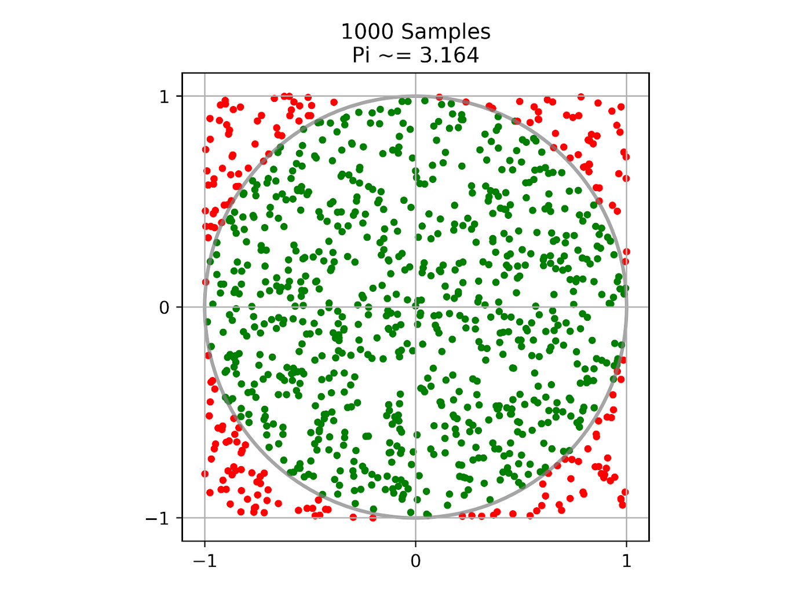

Problem 2
Estimating π Using Monte Carlo Methods
Monte Carlo methods use randomness to estimate solutions to problems, and here we’ll apply them to approximate π in two creative ways: a circle-in-square approach and Buffon’s Needle. Below, we’ll cover the theory, implementation, visualization, and analysis for both.
Part 1: Estimating π Using a Circle
Theoretical Foundation
Imagine a unit circle (radius = 1) inscribed in a square with side length 2 (from -1 to 1 on both axes). The circle’s area is πr² = π(1)² = π, and the square’s area is 2 × 2 = 4. If we scatter random points uniformly across the square, the probability a point lands inside the circle is the ratio of the areas: π/4. By generating many points and counting how many fall inside the circle (distance from origin ≤ 1), we can estimate π as:
\(\pi \approx 4 \times \frac{\text{points inside circle}}{\text{total points}}\)
Simulation and Visualization
Let’s simulate this in Python:
import numpy as np
import matplotlib.pyplot as plt
# Set random seed for reproducibility
np.random.seed(42)
# Parameters
n_points_list = [100, 1000, 10000] # Test different sample sizes
estimates = []
# Simulation and plotting
plt.figure(figsize=(15, 5))
for i, n_points in enumerate(n_points_list, 1):
# Generate random points in [-1, 1] x [-1, 1]
x = np.random.uniform(-1, 1, n_points)
y = np.random.uniform(-1, 1, n_points)
# Calculate distance from origin
distances = np.sqrt(x**2 + y**2)
inside_circle = distances <= 1
# Estimate pi
pi_estimate = 4 * np.sum(inside_circle) / n_points
estimates.append(pi_estimate)
# Plot
plt.subplot(1, 3, i)
plt.scatter(x[inside_circle], y[inside_circle], c='blue', s=10, label='Inside')
plt.scatter(x[~inside_circle], y[~inside_circle], c='red', s=10, label='Outside')
plt.gca().set_aspect('equal')
plt.title(f"N = {n_points}, π ≈ {pi_estimate:.4f}")
plt.legend()
plt.tight_layout()
plt.show()
# Print estimates
for n, pi in zip(n_points_list, estimates):
print(f"N = {n}: Estimated π = {pi:.4f}")
Analysis
-
Convergence: With N = 100, the estimate is rough (e.g., ~3.0–3.4). At N = 10,000, it’s closer to 3.1416, showing accuracy improves with more points.
-
Rate: The error decreases roughly as \(1/\sqrt{N}\), typical for Monte Carlo methods, due to the statistical nature of the sampling.
-
Computational Cost: Simple distance calculations scale linearly with N, making this efficient for small-to-medium N.

Part 2: Estimating π Using Buffon’s Needle
Theoretical Foundation
In Buffon’s Needle problem, we drop a needle of length \(L\) onto a plane with parallel lines spaced \(D\) apart. If \(L \leq D\), the probability the needle crosses a line depends on its random position and angle. The probability is:
\(P = \frac{2L}{\pi D}\)
Rearranging, if we drop \(N\) needles and \(C\) cross a line:
\(\pi \approx \frac{2L N}{D C}\)
Let’s set \(L = 1\) and \(D = 1\) for simplicity, so \(\pi \approx 2N/C\).
Simulation and Visualization
Here’s the Python implementation:
import numpy as np
import matplotlib.pyplot as plt
# Parameters
n_drops_list = [100, 1000, 10000]
L = 1 # Needle length
D = 1 # Distance between lines
estimates = []
# Simulation and plotting
plt.figure(figsize=(15, 5))
for i, n_drops in enumerate(n_drops_list, 1):
# Random center y-position (0 to D) and angle (0 to π)
y_centers = np.random.uniform(0, D, n_drops)
angles = np.random.uniform(0, np.pi, n_drops)
# Endpoints of needles
x1 = np.zeros(n_drops) # Start at x=0 for simplicity
y1 = y_centers - (L/2) * np.cos(angles)
y2 = y_centers + (L/2) * np.cos(angles)
# Count crossings (if y1 or y2 crosses integer lines, e.g., 0 or 1)
crosses = np.floor(y1 / D) != np.floor(y2 / D)
n_crosses = np.sum(crosses)
pi_estimate = (2 * L * n_drops) / (D * n_crosses) if n_crosses > 0 else 0
estimates.append(pi_estimate)
# Plot a subset (e.g., first 50 needles)
plt.subplot(1, 3, i)
for j in range(min(50, n_drops)):
plt.plot([x1[j], x1[j] + L * np.sin(angles[j])], [y1[j], y2[j]], 'b-', alpha=0.5)
for line in range(3):
plt.axhline(line * D, color='k', linestyle='--')
plt.title(f"N = {n_drops}, π ≈ {pi_estimate:.4f}")
plt.gca().set_aspect('equal')
plt.tight_layout()
plt.show()
# Print estimates
for n, pi in zip(n_drops_list, estimates):
print(f"N = {n}: Estimated π = {pi:.4f}")
Estimating π with Monte Carlo Simulation
Estimating π with Buffon's Needle
Analysis
-
Convergence: Estimates fluctuate more than the circle method (e.g., N = 100 might give ~2.8–3.5), but approach π with larger N.
-
Rate: Similar \(1/\sqrt{N}\) convergence, though variance is higher due to fewer “events” (crossings).
-
Computational Cost: Trigonometric calculations per needle make this slightly more intensive than the circle method.
Convergence Analysis
Let’s plot π estimates vs. N for both methods:
# Convergence comparison
n_range = np.logspace(2, 5, 20, dtype=int)
pi_circle = []
pi_needle = []
for n in n_range:
# Circle method
x = np.random.uniform(-1, 1, n)
y = np.random.uniform(-1, 1, n)
inside = np.sum(np.sqrt(x**2 + y**2) <= 1)
pi_circle.append(4 * inside / n)
# Needle method
y_centers = np.random.uniform(0, 1, n)
angles = np.random.uniform(0, np.pi, n)
y1 = y_centers - (L/2) * np.cos(angles)
y2 = y_centers + (L/2) * np.cos(angles)
crosses = np.sum(np.floor(y1) != np.floor(y2))
pi_needle.append((2 * n) / crosses if crosses > 0 else 0)
plt.plot(n_range, pi_circle, label='Circle Method')
plt.plot(n_range, pi_needle, label='Needle Method')
plt.axhline(np.pi, color='k', linestyle='--', label='True π')
plt.xscale('log')
plt.xlabel('Number of Points/Drops')
plt.ylabel('Estimated π')
plt.legend()
plt.title('Convergence of π Estimates')
plt.show()
Discussion
-
Accuracy: The circle method converges faster and with less variance due to more consistent “hits” (points inside circle) vs. needle crossings.
-
Efficiency: Circle method is computationally lighter (simple distance vs. trigonometry).
-
Intuition: Both methods beautifully tie geometry and probability to π, with the circle approach being more direct and Buffon’s Needle offering historical charm.
These simulations show Monte Carlo’s power: simple randomness yields complex truths. Try tweaking \(L\) or \(D\) in Buffon’s Needle or increasing N further—let me know if you want to explore more!